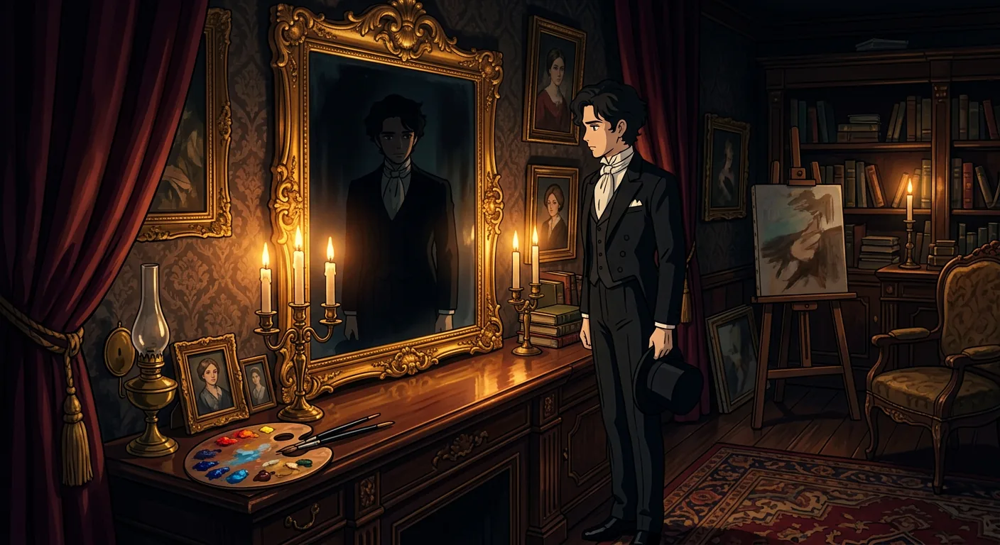
Art's Beautiful and Useless Truth
A clever writer once shared some special thoughts about art and beauty. He believed that people who make beautiful things, like painters and writers, have a very important job. They create lovely pictures and stories for everyone to enjoy. He thought that beautiful things do not need to teach us lessons or be useful like a hammer or a spoon. A painting can just be pretty, and that is enough. A story can just be exciting or dreamy, and that is wonderful too. He wanted people to look at art and feel happy or curious or amazed. The writer believed that making something beautiful takes great care and love. Artists work very hard to get everything just right. With these ideas about beauty and art, a new story is about to begin, full of interesting people and surprising things to discover.
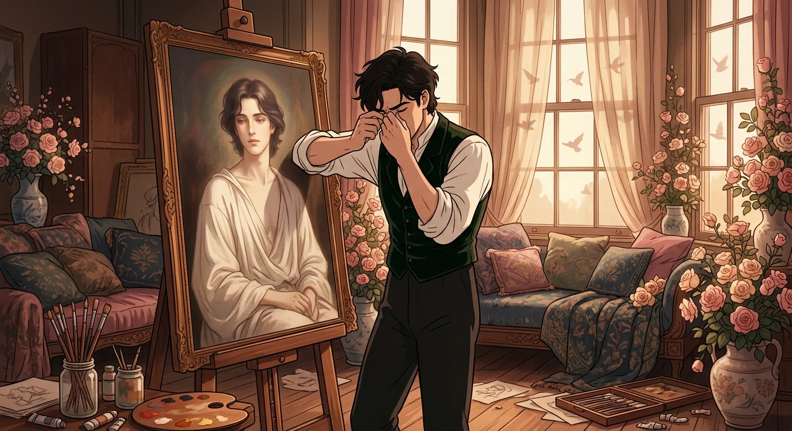
The Seduction of a Beautiful Soul
The studio smelled sweet, like roses and lilacs in bloom. Lord Henry lay on a cozy couch, watching bird shadows dance across the curtains. Bees buzzed outside in the tall grass. In the middle of the room stood a beautiful painting of a young man. The artist Basil had made it, and he thought it was very special.
Lord Henry said it was wonderful work. But Basil did not want anyone else to see it. He felt he had put too much of his heart into the painting. The young man in the picture was named Dorian Gray. Basil told his friend how he met Dorian at a fancy party. From that very first moment, Basil knew Dorian was important. Dorian helped Basil paint better than ever before. He was like a wonderful friend who made everything feel exciting and new. Just then, someone knocked. The butler came in with surprising news. Dorian Gray had arrived and was waiting to see them.
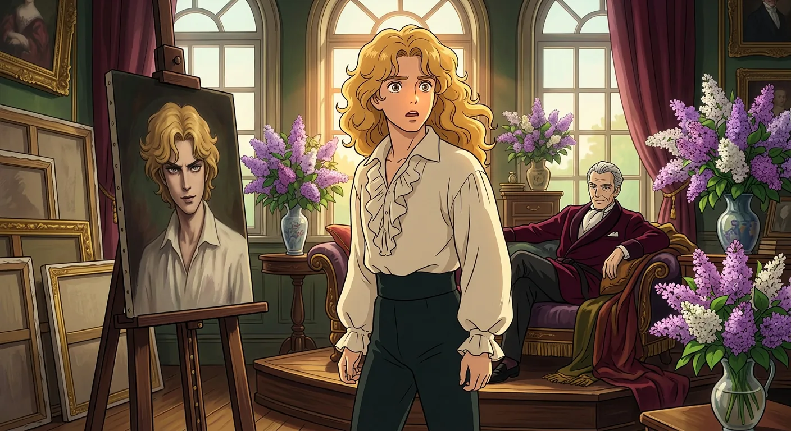
Lord Henry's Dangerous Philosophy Unveiled
In Basil's sunny art studio, young Dorian sat at the piano looking at music while Basil painted his picture. Then Lord Henry came to visit, and everything began to change. Lord Henry was very clever with words and liked to share big ideas. He told Dorian that being young and beautiful was the most wonderful thing in the world. He said people should enjoy every happy moment while they can.
Dorian listened carefully to every word Lord Henry said. When Basil finished the painting, Dorian looked at it and gasped. He had never seen how lovely he looked! But then he felt sad because he knew the painting would stay beautiful forever while he would grow older. Dorian wished very much that he could stay young like the picture. Basil worried that his friend was filling Dorian's head with too many new ideas. Lord Henry invited Dorian to go to the theatre that evening, and the two of them left together while Basil stayed behind, feeling a little bit lonely.
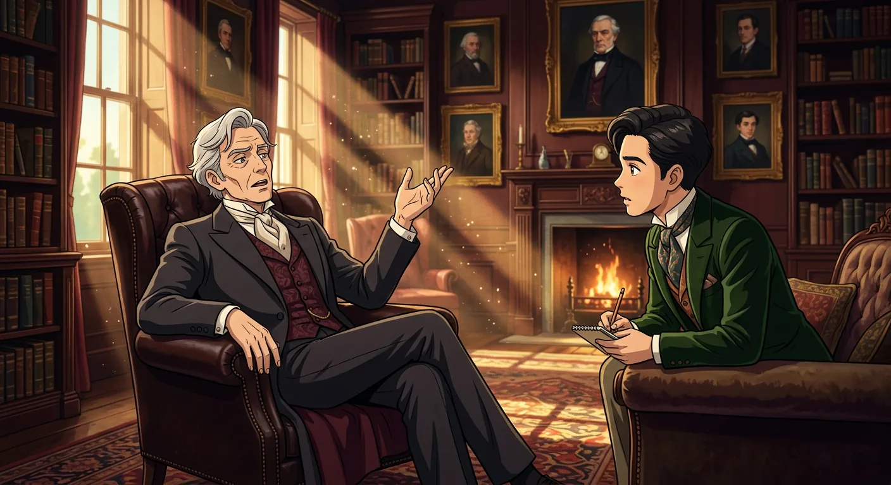
A Lineage of Beauty and Tragedy
Lord Henry wanted to learn about his new friend Dorian Gray. So he went to visit his uncle, Lord Fermor. His uncle was a kind old man who knew many stories about important families. Lord Fermor remembered Dorian's family well. Dorian's mother was named Margaret, and she was very beautiful. She fell in love and got married, but then something sad happened. She lost her husband and became very unhappy. She passed away when Dorian was just a little baby.
Later that day, Lord Henry went to a fancy lunch party. Dorian was there too! Everyone talked and laughed around the big table. Lord Henry told funny stories and said clever things that made people smile. Dorian listened to every word with wide, wondering eyes. He thought Lord Henry was the most interesting person he had ever met. When lunch was over, Dorian asked Lord Henry to spend more time with him. Lord Henry smiled warmly and said yes.
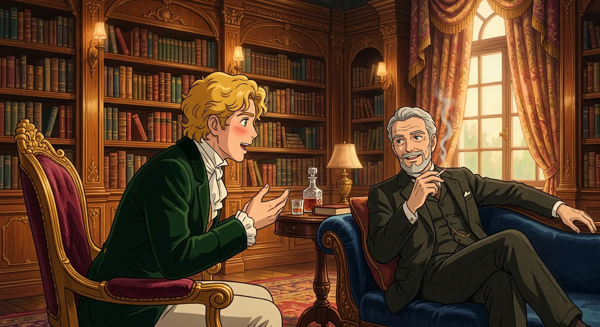
Sibyl Vane and the Theatre of Love
Dorian Gray was waiting in his friend Harry's fancy library one afternoon. The room was pretty, with soft light coming through the windows. Harry's wife Victoria stopped by for a little visit. She was a funny lady who liked loud music and talked very fast. Then Harry came in, and Victoria hurried off to do other things.
Dorian had exciting news to share with Harry. He had fallen in love with a girl named Sibyl Vane. She was an actress who performed in plays at a small theatre. Dorian thought she was wonderful and magical on stage. She played princesses and brave girls in beautiful stories. Every night, Dorian went back to watch her act. He wanted everyone to know how special she was. Harry said he would come see her perform too. Later that night, Harry got a surprise note. Dorian wanted to marry Sibyl! Everything was happening so fast.
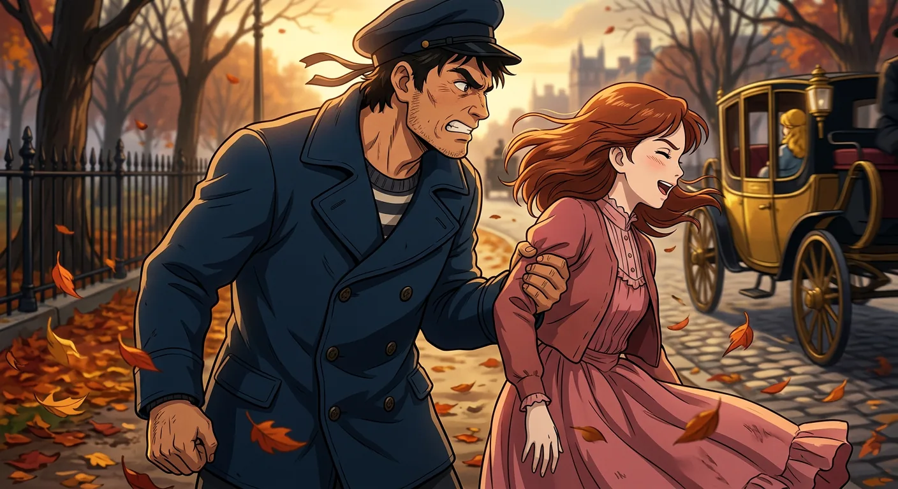
A Sister's Dangerous Prince Charming
Sibyl is a young actress who feels so happy because she has fallen in love. She calls her sweetheart Prince Charming, and her heart feels full of joy. Her mother worries about money and bills, but Sibyl can only think about love. Her brother James is about to sail far away to Australia. He wants to spend one last afternoon walking with his sister before he goes. They stroll together through the sunny streets and talk about dreams and the future.
James feels worried about his sister's new sweetheart. He does not know this man's real name, and he wants to make sure Sibyl will be safe and happy. He loves his sister very much and promises to always look out for her, even from far away. Sibyl just laughs and tells him not to worry. She believes everything will be wonderful. Then James says goodbye to his mother and climbs into a cab, ready to begin his big adventure across the sea.
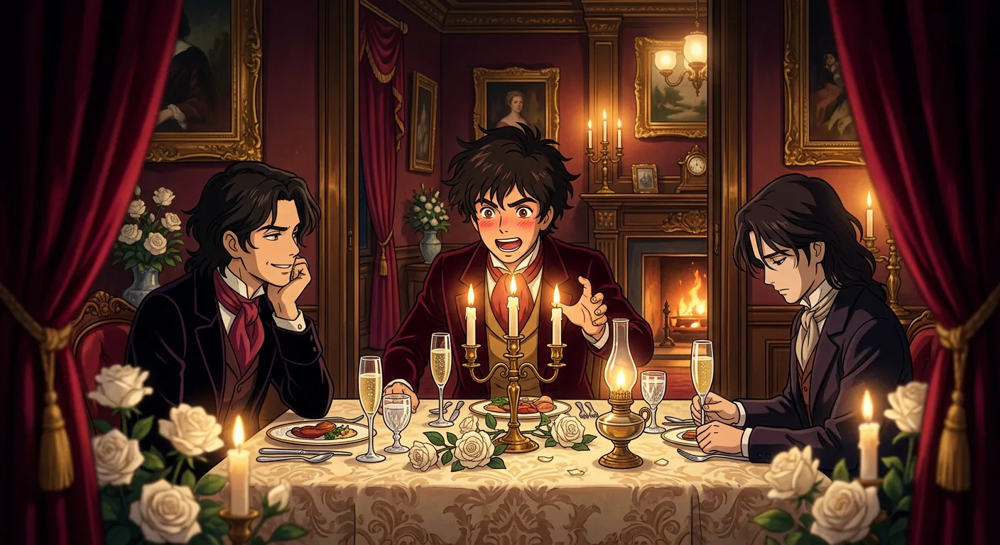
Love's Sudden and Foolish Blossoming
One evening, three friends met for dinner at a fancy hotel. Dorian had exciting news to share. He had fallen in love! The girl's name was Sibyl, and she was an actress who performed in plays. Dorian thought she was wonderful and magical. When she acted on stage, she made him feel like he was watching something from a dream. He wanted to marry her someday soon.
His friend Basil felt worried because everything was happening so fast. But Dorian's heart was so full of happiness that nothing could make him feel afraid. He talked and talked about Sibyl with sparkly eyes and a big smile. His other friend Harry listened and said clever things, but Dorian just kept feeling joyful. After dinner, they all rode in carriages through the bright city streets to see Sibyl perform at the theatre. Basil felt a little sad and quiet, but Dorian could only think about seeing the girl he loved.
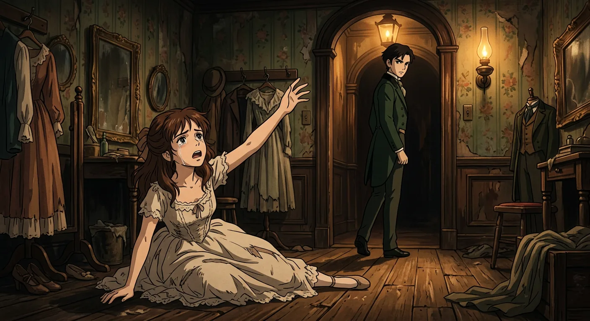
The Night Sibyl Vane's Art Died
Dorian took his friends to a little theatre to see Sibyl act in a play. The room was very warm and crowded that night. When Sibyl walked onto the stage, she looked so pretty and sweet. But something was wrong. Her words sounded empty and strange, not magical like before. The people watching grew upset and restless. Dorian felt confused and sad.
After the show, Sibyl ran to meet him with a happy smile. She told him that love had changed everything for her. Acting felt pretend now, and his love felt real. But Dorian said something very unkind to her. He told her that without her wonderful acting, he did not love her anymore. Poor Sibyl cried and begged him to stay, but he walked away into the dark night. When Dorian came home at sunrise, he looked at his special portrait. Something about the face looked different now, a little bit cruel. It made him feel sorry for what he had done.
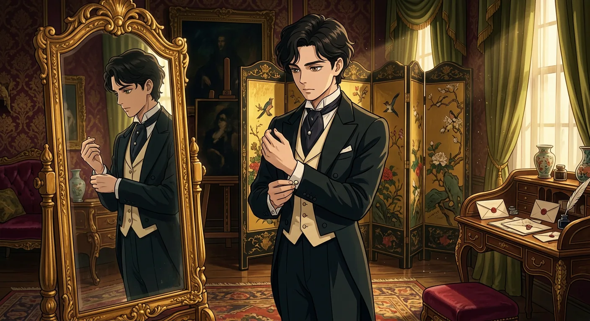
The Portrait's First Terrible Truth
Dorian Gray woke up very late in his beautiful room. Sunlight streamed through the fancy curtains. He had tea in a pretty cup and felt happy. A bee buzzed around the roses by his window. Everything seemed so peaceful and nice.
Then Dorian looked at the painting of himself. Something about it had changed. The face in the picture looked a little bit mean now. Dorian felt bad because he had been unkind to Sibyl. He decided he would say sorry and be a better person. He wrote her a long letter telling her how much he cared.
But then his friend Henry came with sad news. Sibyl had gotten very sick and passed away. Dorian felt strange inside. He was sad, but not as sad as he thought he should be. Henry said things that made Dorian feel less worried about it all. Later, Dorian looked at the painting again. He decided to keep it hidden behind a screen. Then he got dressed and went out with Henry.
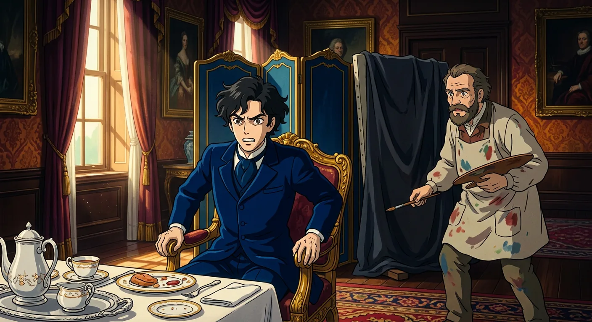
The Art of Unfeeling
The morning after Sibyl passes away, Basil comes to visit Dorian. The painter feels very worried about his young friend. But Dorian does not seem sad at all. He talks about going to the opera and acts like nothing bad happened. This makes Basil feel cold inside. Dorian says he will not let his feelings control him anymore. He wants to be strong and not cry. Basil can tell that something has changed in his friend.
Even so, Dorian asks Basil not to leave him. He says Basil is a good person. Basil wants to see the painting he made, but Dorian gets very upset and scared. He does not want anyone to look at it. Basil tells Dorian a secret instead. He says he cared so much about painting Dorian that he put his whole heart into the picture. Dorian feels better after hearing this. But he still hides the painting away where no one can find it.
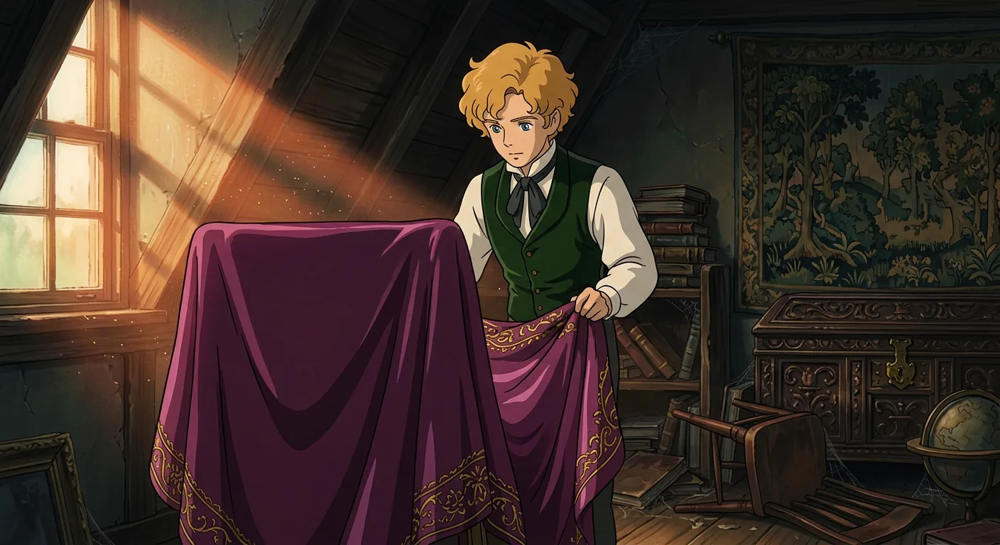
The Schoolroom's Secret Burden
Dorian woke up feeling worried and watchful. He had a big secret to hide, and he did not want anyone to find it. He asked the kind housekeeper for a key to an old room at the very top of his house. It was a dusty schoolroom where no one ever went anymore. When Dorian was little, he used to play there all by himself. He remembered hiding in a big wooden chest and reading his schoolbooks. Now the room would keep his special painting safe where no one could see it.
Some helpers came to carry the heavy painting up the stairs. Dorian covered it with a beautiful purple cloth that shimmered with golden threads. He locked the door tight and went back downstairs. There he found a cup of tea waiting for him, and a strange yellow book from his friend Henry. Dorian started reading the book and could not stop. It was full of dreamy, unusual stories that made him feel like he was in another world. He read until the sky turned soft and dim outside his window.
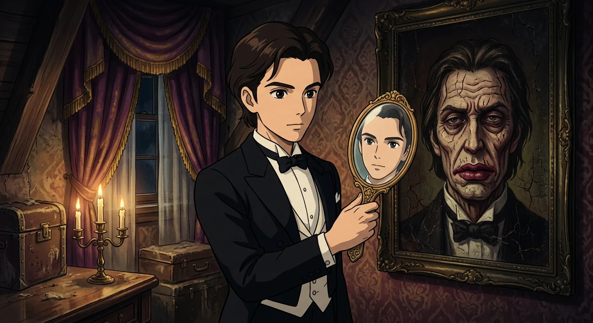
The Mirror and the Monster Within
A special book became very important to Dorian Gray. He loved it so much that he bought nine copies and covered each one in a different color. The book made him think about his own life in new ways.
Dorian stayed young and handsome while years and years went by. People in the city whispered about him and wondered about his secrets. But when they saw his kind face and gentle smile, they forgot their worries. He was very good at making people like him.
In a locked room, Dorian kept a hidden painting of himself. Sometimes he would look at it behind a curtain. The painting changed over time, but Dorian stayed the same on the outside. He filled his house with beautiful things like sparkly jewels, fancy clothes, and instruments that made unusual music. He loved sweet-smelling perfumes too. All these lovely treasures helped him feel happy and forget his troubles for a while. But the hidden painting was always waiting quietly in its secret room.
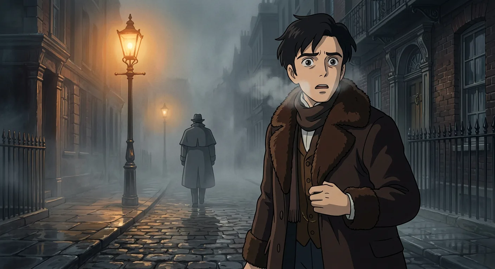
A Foggy Night's Fatal Reckoning
On a foggy night, Dorian was walking home when he spotted his old friend Basil in the mist. At first Dorian tried to hurry past, but Basil caught up with him. Basil wanted to talk before leaving on a long trip to Paris. He had been waiting for hours just to see Dorian.
Inside the cozy library with a warm fire, they chatted for a bit. But then Basil grew serious and sad. He told Dorian that people in town were saying unkind things about him. Basil was worried because some of Dorian's friends had gotten into trouble. He wanted to understand what was happening with the person he cared about.
Dorian felt strange feelings bubbling up inside him. He decided to show Basil something very special and secret upstairs. It was the painting Basil had made long ago. Dorian grabbed a lamp and led his friend up the stairs into the quiet darkness.
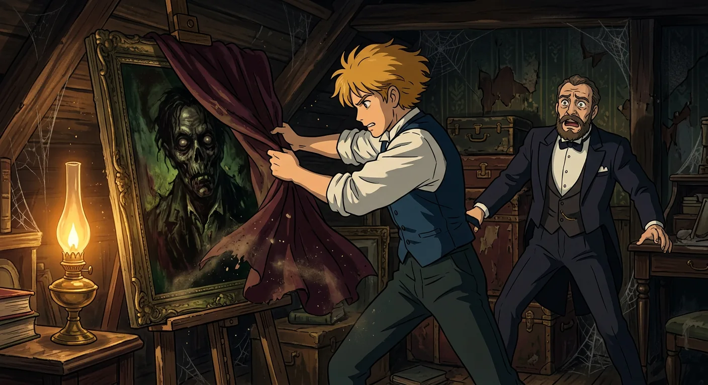
The Soul Revealed in Canvas
Dorian took Basil up a dark staircase to a dusty old room at the very top of the house. The room had been forgotten for a long time. Cobwebs hung everywhere, and a little mouse ran behind the wall. In the middle of the room stood a painting covered by a curtain. Dorian pulled back the curtain to show Basil the picture. It was the beautiful portrait Basil had painted long ago, but now it looked very different. The face in the painting had become ugly and mean-looking. Basil was so shocked and sad when he saw what had happened to his lovely painting. He begged Dorian to be kind and good again. But Dorian's heart had grown cold. He did not want to listen to his old friend anymore. Something very bad happened between them that night, and afterward Dorian went downstairs alone. He sat in his library looking through a book for the name of someone who might help him.
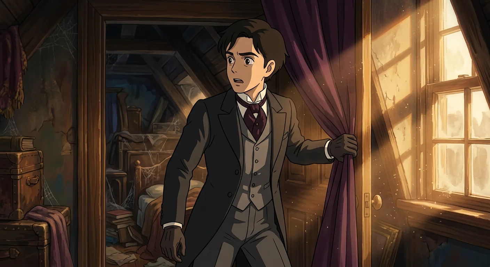
Sunlight on Blood-Stained Memory
The next morning was sunny and warm, even though it was November. Dorian slept so peacefully, like a tired child after playing all day. When he woke up, he smiled without knowing why. Young people often smile like that, and it is lovely.
But then Dorian remembered something sad from the night before. His friend Basil was gone, and Dorian felt very worried about it. He tried not to think about it. He got dressed nicely and ate a slow breakfast. He read his letters and wrote some notes. One note went to a man named Alan Campbell, asking him to come over right away.
While waiting, Dorian tried to draw pictures and read a pretty book about a city with green waterways. But he kept thinking about his friend. When Alan finally came, he looked very serious. Dorian asked Alan for help with something important. At first Alan said no, but then he changed his mind. Alan helped Dorian take care of a big problem. Afterward, Alan left quietly, and Dorian felt grateful but also a little sad inside.
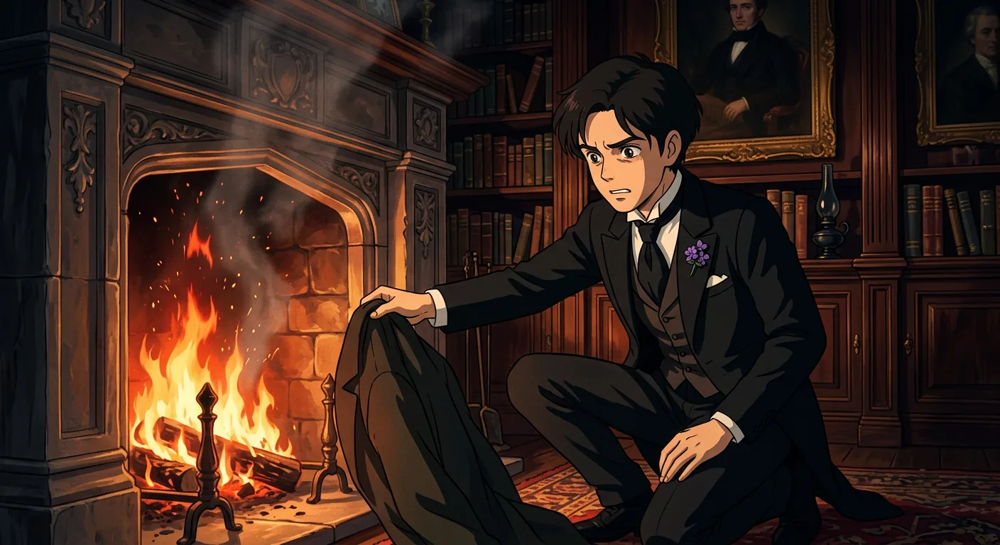
A Mask of Grace and Guilt
That evening, Dorian went to a fancy dinner party. He wore his best clothes and a pretty purple flower. He smiled and talked with everyone there. But inside, he felt very worried and strange. He was pretending to be happy when he really was not.
Lady Narborough hosted the party at her big house. The other guests were not very interesting to Dorian. He was glad when his friend Lord Henry came in. Lord Henry always knew how to make people laugh. At dinner, Dorian did not feel like eating. He just pushed his food around his plate. People chatted about silly things and told funny stories. Lady Narborough said Dorian looked like such a good person. That made him feel funny inside because he had a big secret.
After dinner, Lord Henry asked Dorian too many questions. Dorian got nervous and said he needed to go home. Back at his house, he burned some old things in the fireplace. Then he looked at a beautiful little box but put it away. When the clock struck midnight, he slipped out into the dark night.
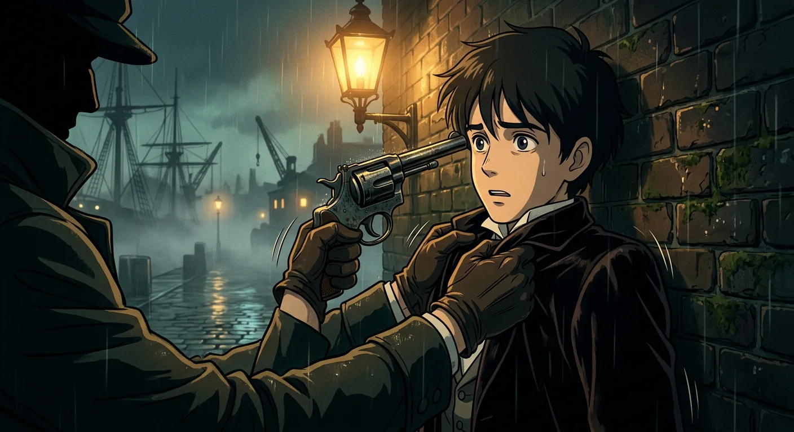
The Desperate Search for Oblivion
Dorian was feeling very sad and troubled inside. He wanted to forget all the things that were making his heart heavy. He rode in a carriage through dark, rainy streets, past flickering lights and shadowy buildings. The ride felt like it took forever. Finally, he came to a shabby old house near the docks. Big ships with tall black masts stood in the misty water nearby. Inside the house, Dorian met a young man named Adrian who seemed very lost and unhappy. This made Dorian feel even worse, so he decided to leave.
Outside in the dark, a man named James grabbed Dorian and held him tight. James was looking for someone who had hurt his sister Sibyl long ago. But when James pulled Dorian into the light, he saw a young face that looked too young to be the right person. James let him go. Dorian hurried away into the foggy night and disappeared before James could catch him again.
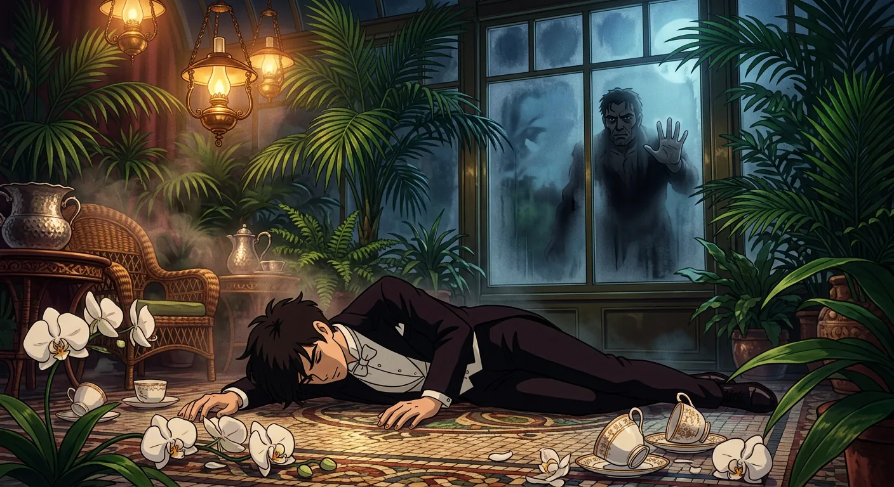
Paradox and Wit at Tea
Dorian was having a fancy party at his big country house. Pretty lamps glowed on nice cups and shiny silver. A kind lady called the Duchess poured tea for everyone. Lord Henry sat nearby, making clever jokes as he always did. The Duchess was very smart too, and she called him Prince Paradox because he said such funny, backwards things. They all talked and laughed together about art and love and all sorts of ideas. Dorian smiled and joked with his friends, but inside he felt worried about something.
Later, Dorian went to pick some pretty flowers in the plant room. But then something scared him very badly, and he fell down in a faint. His friends hurried to help him and made sure he was comfortable on a soft sofa. When he woke up, he looked pale and shaky. He had seen someone through the window who made him feel afraid. Dorian did not want to be alone that night, so his friends stayed close to keep him company.
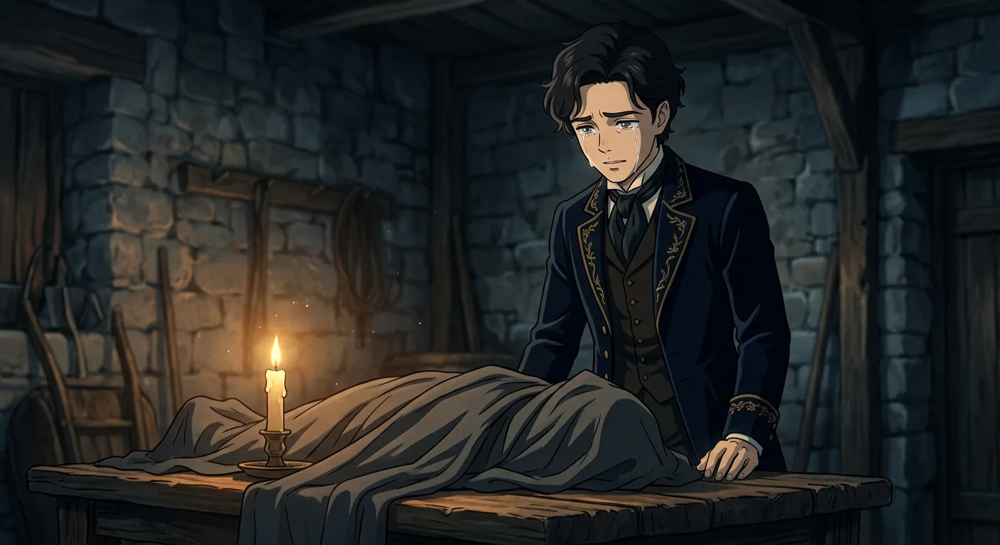
Shadows of Conscience and Fatal Chance
For a whole day, Dorian stayed alone in his room feeling very scared. He thought he saw a frightening face outside his window. Every little sound made him jump. The wind rattling the leaves made his heart pound fast. He felt so upset that his friend Henry found him crying.
After a few days, Dorian felt a little better. He went outside with friends on a cold winter morning. The air smelled like pine trees and the sky was bright blue. But then something sad happened during the outing. A man got badly hurt, and Dorian felt terrible about it. He wanted to go home right away.
Then someone brought surprising news. The man who got hurt was actually the sailor who had scared Dorian before. Dorian rode to see for himself, and it was true. He cried as he rode home, but these were tears of relief. He finally felt safe again.
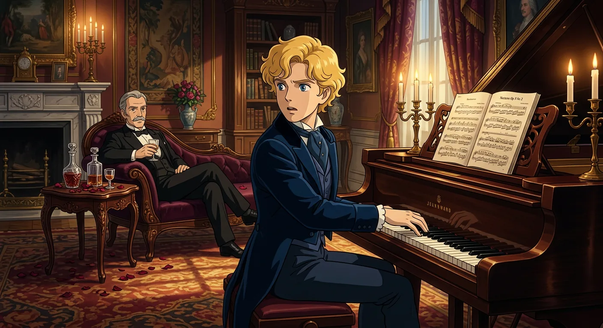
The Final Mask Shatters
Dorian told his friend Harry that he wanted to be a better person now. He said he had been kind to a sweet girl named Hetty instead of being unkind to her. Harry just laughed gently and said being good was probably just a new game for Dorian. They talked about their old friend Basil, the painter, who had gone away and nobody knew where he was. Dorian asked Harry a strange question about what he would think if someone did something very wrong. But Harry did not take him seriously at all.
Harry asked about the special painting Basil had made long ago. Dorian looked uncomfortable and said he did not like to think about it anymore. Harry noticed how young and handsome Dorian still looked after all these years. Dorian seemed sad and said he wished he could change and be different inside. They said goodnight, and Dorian walked out under the soft golden moon, feeling very thoughtful and a little bit lost.
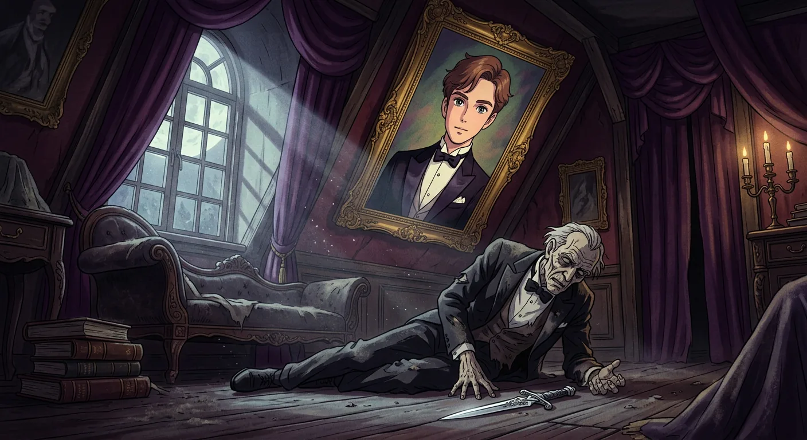
The Soul's Final Reckoning
Dorian Gray walked home through the warm night, feeling very tired and sad. Two young men recognized him, but he did not care anymore. He thought about a kind girl in a village who had laughed like a singing bird. She was happy and good, and he wished he could be like that again. Dorian sat alone in his library, thinking about his past. He had not been kind to people, and he felt very sorry. He looked in a beautiful mirror, but it only made him feel worse. He threw it down and it broke into tiny pieces. Then Dorian went upstairs to look at a special painting of himself. He hoped the painting would look nicer now, but it did not. It looked even sadder than before. Dorian picked up a sharp knife and cut the painting. There was a loud crash. When the servants came in, they found the painting looking young and beautiful again, but Dorian was gone forever.
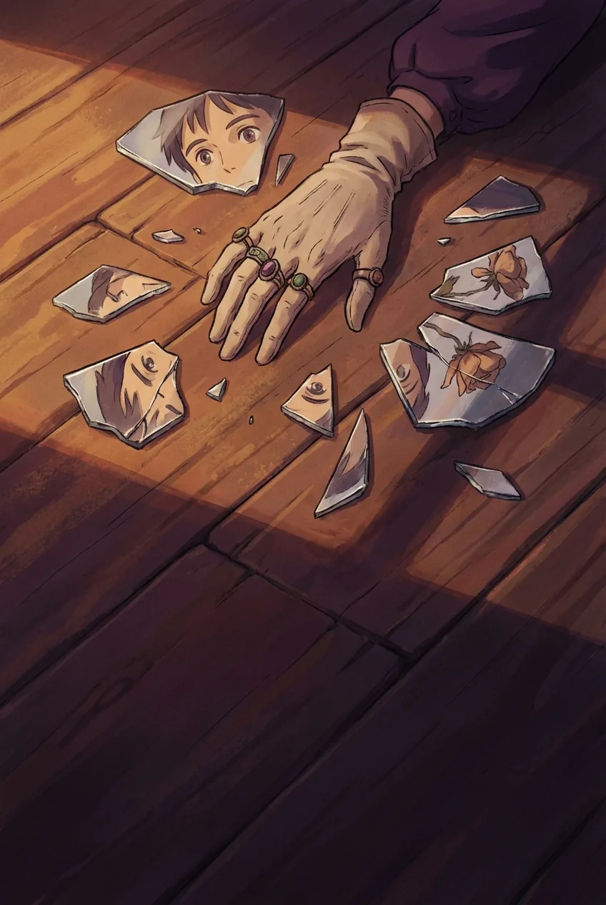